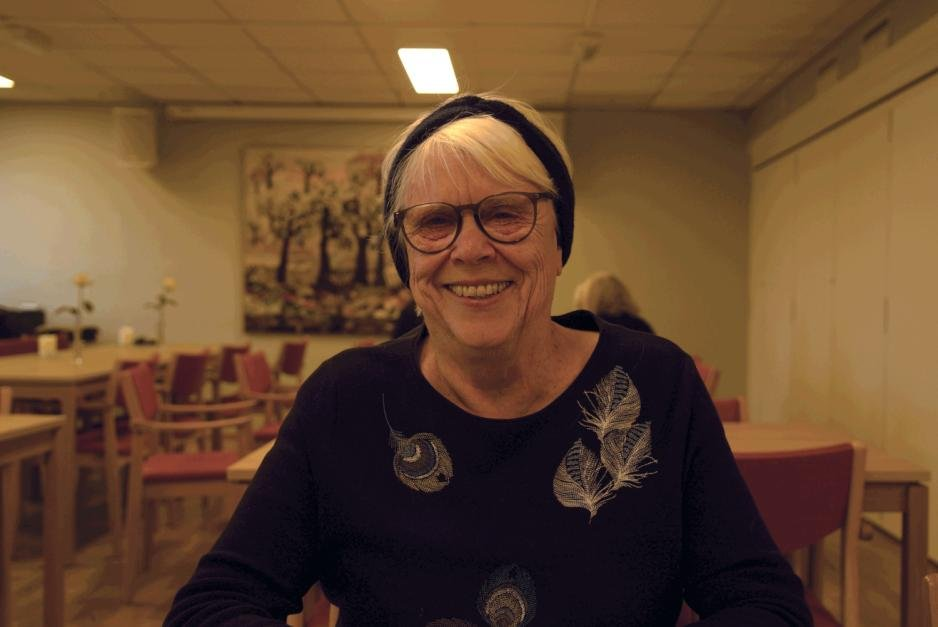
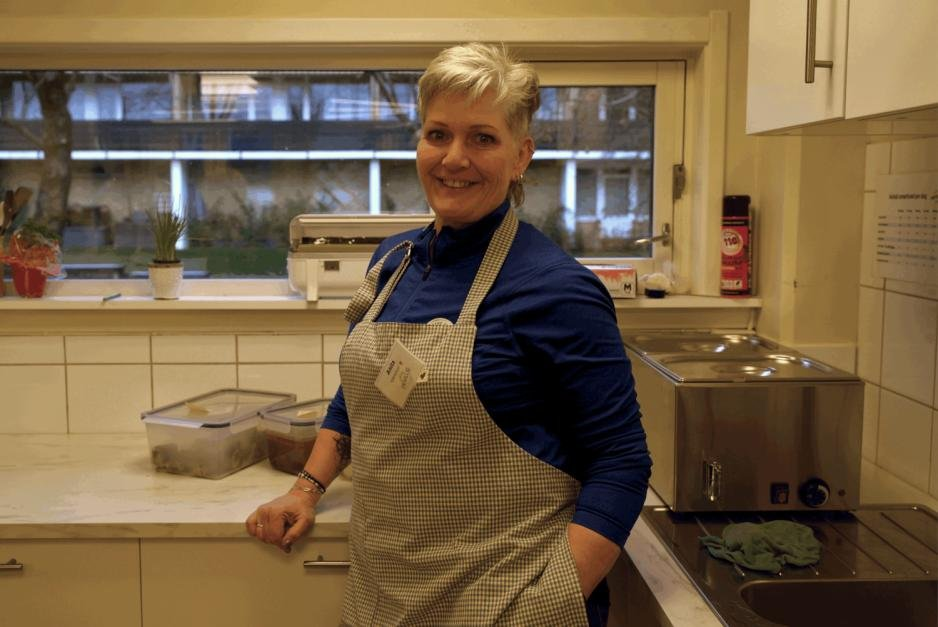
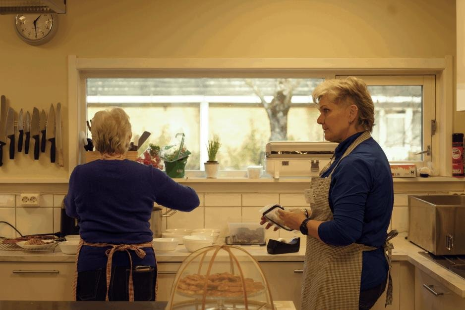

Seniorsenter ble sentralt møtepunkt
Da seniorsenteret på Vinderen ble lagt ned, ble det behov for et alternativt tilbud. Vestre Aker Frivilligsentral arrangerer nå ukentlige tilbud til glede for nærmiljøet.
Vestre Aker er en av bydelene i Oslo med høyest gjennomsnittsalder. Nærmest en fjerdedel av lokalbefolkningen er i aldersgruppen 60+. Derfor gikk det utover mange da Bydelsutvalget bestemte seg for å legge ned Røa og Vinderen seniorsenter.
Forslaget ble introdusert i oktober 2024 som et innsparingstiltak på grunn av økonomisk underskudd i Vestre Aker. Røa og Vinderen seniorsentre ble da foreslått nedlagt fra og med 1. januar 2025, noe som senere ble vedtatt. Det møtte stor protest i lokalmiljøet.
Bydelsleder for Vestre Aker Yngve A. Husebye skriver at det alltid har vært stor forståelse for reaksjonene forslaget først ble møtt med.
– Det ble derfor samtidig med nedleggelsen i kommunalt regi bestemt at bydelen skulle beholde lokalene på Vinderen og heller invitere Vestre Aker Frivilligsentral til å skape en sosial møteplass, forklarer Husebye videre. Det er i dag registrert 38 frivillige på huset.
Felles fredagsmiddag på Vestre.
En møteplass med nytteverdi
Ellen Margrethe Winther har brukt den lokale møteplassen i oppimot 20 år. Hun begynte som frivillig på seniorsenterets kontor, men har siden blitt glad i å ta del i flere av arrangementene som har kommet etter at Frivilligsentralen overtok lokalene.
Hun sier at hun stadig er innom og at plassen spiller en sentral rolle i hverdagen hennes. I tillegg forteller hun at det har vært en fin arena for å stifte bekjentskaper, der tilbudet ellers er begrenset.

– Man kan jo selvfølgelig drikke en kaffe og prate med noen venninner på de par kafeene som er å finne i området, men jeg synes det fort blir litt bråkete, sier hun.
Hun fortsetter med å fortelle om fordelen med å ha en møteplass hvor man kan møte opp som man er, og ikke nødvendigvis behøver å ha med seg noen.
– Her får man jo muligheten til å treffe nye mennesker. Jeg har fått mange nye bekjentskaper på grunn av nettopp dette tilbudet, som jeg også har utenfor møteplassen.
På fredager er Vestre Aker Frivilligsentral prydet med hvite duker og en middag i godt selskap - alt i regi av lokale frivillige. Fredagsmiddagen er en sentral begivenhet i møteplassens kalender og har alltid et godt oppmøte. Winther beskriver den som noe helt spesielt.
Takknemlig arbeid
Vestre Aker Frivilligsentral overtok lokalene på Vinderen i januar og var avhengige av frivillig innsats. Anita Vasstveit tok stillingen som kjøkkensjef, i tillegg til jobben hun allerede hadde som personlig trener på siden.
– Det er to jobber som passer godt sammen i og med at timene jeg trengs som mest her på møteplassen er de roligste timene på treningssenteret. Det er en «perfect match», forteller hun.

Vasstveit forteller at til tross for uforutsigbarhet knyttet til behovet for frivillig arbeidslyst, går kabalen som regel opp. I tillegg beskriver hun arbeidsmiljøet som det beste hun har opplevd i sin tid som yrkesaktiv.
– Energien på arbeidsplassen er helt fantastisk. Jeg er jo avhengig av at folk ønsker å komme hit, så jeg legger et ekstra fokus på å takke alle som ønsker å hjelpe til, forklarer hun.
– Det er kjempeviktig for meg at alle blir sett hver dag. At de skal føle at de blir satt pris på og at innsatsen deres er verdifull for oss.
Nye muligheter
Det var naturligvis primært seniorer som oppsøkte møteplassen da det var et etablert seniorsenter, kan Vasstveit fortelle. Hun ser på overtagelsen av Frivilligsentralen som en ny mulighet til å skape et enda bredere tilbud for lokalmiljøet.

– Nå jobber vi med å inkludere næringsmiljøet i området, forklarer hun og fortsetter:
– Det er mange kontorer her, og mer enn nok folk som kanskje kunne benyttet seg av lokalet til møtematen.
Det jobbes aktivt med å åpne tilbudet og nå ut til så store deler av nærmiljøet som mulig. Bydelsleder Husebye beskriver tilbudet som en ubetinget suksess, og kan bekrefte at senteret har større aktivitet og bedre besøk nå enn tidligere.
Saken er først publisert på Journalen ved OsloMet.
Tekst og bilder: Vilde Westad